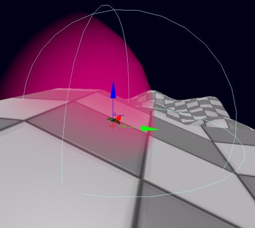
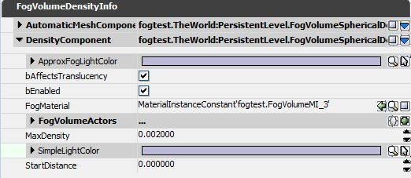
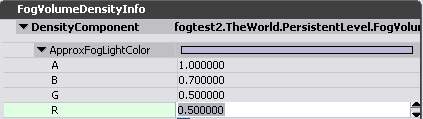

UDN
Search public documentation:
FogVolumesCH
English Translation
日本語訳
한국어
Interested in the Unreal Engine?
Visit the Unreal Technology site.
Looking for jobs and company info?
Check out the Epic games site.
Questions about support via UDN?
Contact the UDN Staff
日本語訳
한국어
Interested in the Unreal Engine?
Visit the Unreal Technology site.
Looking for jobs and company info?
Check out the Epic games site.
Questions about support via UDN?
Contact the UDN Staff
雾体积
文档变更记录: 由 Daniel Wright 创建。
版本
什么是雾体积？
设置方法
快速自动设置
- 放置一个FogVolumeConstantDensityInfo (在Generic Browser(通用浏览器)->Actor Classes->Info->FogVolumeDensityInfo下找到)。

之后就会放置一个具有常量密度的雾体积。
自动设置细节
- 将雾体积上的DrawScale3d修改为偏离1.0的值，将会使得AutomaticMeshComponent 不再和雾体积信息的体积相匹配。
- 当您放置一个新的球形雾体积信息时，设置了DrawScale X、Y和Z，以便使得AutomaticMeshComponent紧紧地包围着雾体积信息。
- 您可以通过修改AutomaticMeshComponent->PrimitiveComponent->Scale(缩放)、Translation(平移)等来控制AutomaticMeshComponent相对于雾体积信息的位置和缩放比例。
- 当您创建一个新的雾体积信息时，将会在关卡中创建一个新的材质实例，并会自动地将其应用到AutomaticMeshComponent上。 这项设置为FogMaterial。 如果您在通用浏览器中选中了一个材质，那么那个材质将会用作为父项，否则将会使用EngineMaterials.FogVolumeMaterial作为父项。 您可以使用您选择的和雾体积相兼容的任何材质来替换这个新的材质实例，但是要确保修改雾体积信息actor上的FogMaterial ，而不是修改AutomaticMeshComponent上实际的Materials 数组。
- 雾体积信息的SimpleLightColor属性是个非常便利的属性，将会设置为AutomaticMeshComponent的材质实例的向量参数 'EmissiveColor' 。 如果您覆盖这个材质实例，并且它没有使用 'EmissiveColor'向量参数，那么SimpleLightColor将不再有效。
- AutomaticMeshComponent不能像手动方法应用的网格物体那样可以在编辑器中进行选中，相反，您必须选中雾体积信息actor本身。
- AutomaticMeshComponent将会适当地设置所有的碰撞、光照和阴影标志。
快速的手动设置
- 放置一个闭合的静态网格物体。
- 放置一个FogVolumeConstantDensityInfo (在Generic Browser(通用浏览器)->Actor Classes->Info->FogVolumeDensityInfo下找到)。
- 清除新放置的雾体积信息的AutomaticMeshComponent。
- 添加静态网格物体到雾体积信息actor的FogVolumeActors 数组中。
- 要想完成这个处理，您首先需要打开您放置的FogVolumeConstantDensityInfo的属性，展开DensityComponent。
- 点击属性窗口左上部的锁。
- 在视口中选中静态网格物体。
- 属性窗口应该仍然显示雾体积信息actor，因为我们锁定了它。
- 点击+号来向FogVolumeActors数组中添加新项。
- 现在点击新的元素项上的'use selected actor(使用选中的actor)'按钮。

在FogVolumeActors数组中设置静态网格物体。 此时，静态网格物体应该被渲染为雾体积了。
手动设置细节
- 当您添加新的FogVolumeActors 项时，它将使用默认雾体积设置，也就是禁用了碰撞、光照和阴影。 新的FogVolumeActor的网格物体组件材质也会变为使用EngineMaterials.FogVolumeMaterial。 要想在目标FogVolumeActor项上设置材质来覆盖该材质，那么FogMaterial不用于手动设置。 * 注意： 由于属性系统的限制，当您添加新的元素项时，FogVolumeActors 数组中的所有项都将设置为这些默认值！* 最好先设置为FogVolumeActors 数组中的所有项，然后再根据需要设置材质。
- 使用手动设置允许您具有多个和单个雾体积信息相关的网格物体，并且它允许您独立地使得雾体积信息或网格物体分别进行动画。 但是，设置使得多个部分进行动画是非常麻烦的，这种情况使用自动设置会变得更加容易。
密度函数
FogVolumeConstantDensityInfo
这个密度函数使得任何地方具有同样的密度，这通过Density变量设置。
常量密度函数会渲染为一个立方体。 雾actor的位置是没有关系的，因为任何地方密度都是一样的。
FogVolumeLinearHalfspaceDensityInfo
这个密度函数通过一个平面和一个现行的密度系数定义。 平面一侧的一般空间将位于雾中。 可以通过旋转及移动雾体积信息actor来任意地旋转及移动这个平面。 这个函数中的密度随着距离平面的距离线性地增加，所以在平面上雾的密度为0，当距离平面距离为1时它变为PlaneDistanceFactor。 线性密度确保了一般的空间永远都不会构成尖锐的差异边缘，即使相机位于平面内也不会产生尖锐的差异边缘。
_线性一半空间密度函数由一个立方体网格物体所包围。 在平面处密度为0，随着距离平面越远密度将会增加，在这个实例中它的方位在xy平面中，但是可以在任何方位使用它。
FogVolumeSphericalDensityInfo
球形密度函数在中心有最大的密度MaxDensity ，密度随着球体的半径呈二次房地衰减为0，从而产生平滑的边缘。 球体的中心由雾体积信息actor的位置决定，缩放该雾体积信息actor将会缩放半径。

球形密度函数具有平滑边缘。 它由一个不能在第一个图片中不能看到的网格物体所包围，因为它没有剪裁球体。 在第二个图片中，网格物体剪裁了球体。 预览组件以线框的形式宣示了球体密度函数的维度。
其他密度函数
如果这些密度函数不足以创建出您想要的衰减效果，那么首先请尝试操作材质。 比如，如果您需要较柔和的边缘，请尝试在球体上的雾体积材质中使用fresnel(菲涅尔)效果。 所获得的效果是仅渲染了雾体积的背面，所以这里不应该使用传统的fresnel(菲涅尔)节点，而是需要镜像法线是它朝向观察者。 还可以在代码中添加其它的密度函数。其他设置

FogVolumeSphericalDensityInfo的属性。
bEnabled（启用）
使用这个属性来启用或禁用雾体积。StartDistance(起始距离)
从观察找到雾出现处的距离，以世界单位计算。 目前，线性半空间密度函数不支持该属性。Density, PlaneDistanceFactor, MaxDensity（密度、平面距离因数、最大密度）
这些属性控制每个密度类型的雾体积密度。 这些属性中任何一项的值为0都相当于 bEnabled=False。Fog Volume Actor(雾体积Actor)
雾体积材质
- 光照模式是Unlit(不带光照)。
- 混合模式是其中一种半透明模式(Translucent(半透明)、Additive（叠加）或 Modulative(调制))。
- 必须有一个自发光输入。
- 必须选中bUsedWithFogVolumes。 注意，这个标志和其他应用标志是相排斥的，一旦设置了该项，那么您仅能在雾体积上使用这个材质。

最小雾体积材质设置。 不透明度默认为1，所以不需要特地指出。 材质的自发光输入端是雾体积颜色，不透明度输入端缩放雾的量，这根据到达雾体积的距离计算。
材质限制
仅当应用材质时描画雾体积actor的背面，这是必要的，以便当相机进入雾的内部时仍然描画雾体积。 这有一些贴图暗示： 贴图仅会应用到雾体积网格物体的背面。 请参照测定体积光照指南获得关于使用贴图获得测定体积光照的技巧。 这也会影响其他属性，比如法线、发射向量等。和高度雾交互
雾体积中的透明对象

设置ApproxFogLightColo成员，以便可以给和雾体积相交的透明对象正确地施加雾。 和雾体积相交的透明对象的雾具有以下限制：
- 雾是基于每个顶点计算的。 要想最小化最终的失真，可以增加透明网格物体的细分程度及避免使用较大的透明网格物体。
- 由于被雾体积网格物体剪裁所以不能呈现雾变换。 相反，和雾体积网格物体的边界框相对齐的坐标轴用于剪裁雾。 雾函数（也就是，球形密度函数中的球体边缘）的雾变换可以正确地计算。
- 可以在一个单独的透明对象上近似的大部分雾交互都是4个高度雾层和一个雾体积。
- 无论是高度雾还是雾体积，都不会给使用调制模式的透明材质添加雾。
- 雾体积不能给应用到植皮网格物体(骨架网格物体或骨架网格物体贴花)上的透明材质施加雾。
性能影响
- 重叠的雾薄片的数量较少。
- 相机永远都不会进入到雾中，或者当您进入到雾中时不介意雾淡出。
- 半透明对象不和雾相交，或者失真不明显。